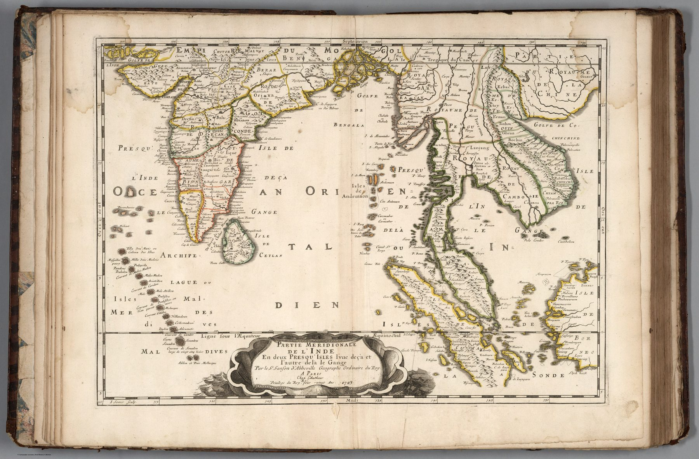

← The Great Mogul and the Companies

The full title as argument
Partie Méridionale de l’Inde en deux presqu’îles, l’une deçà et l’autre delà le Gange names its organising scheme explicitly. The Indian peninsula and mainland Southeast Asia are treated as the two peninsulas of a larger India.
An ancient division in modern form
The distinction is the Ptolemaic one already carried in the title of Sanson’s 1654 map, here engraved in the restrained style of the French school and populated with early-modern place knowledge.
Coasts and interiors
Maritime edges, ports and major political names receive the clearest treatment. Inland information is thinner and more uneven. Clarity here measures the engraver’s discipline more than the state of knowledge inland.
On the sheet
The two peninsulas are lettered across their length, Presqu’isle de l’Inde deçà le Gange and Presqu’isle de l’Inde delà le Gange, so that the title’s argument is written on the land itself. Inside the first the kingdoms are still the sixteenth century’s: Royaume de Bisnagar in the interior and Bisnagar as a city, beside Golconde, Decan and the Côte de Malabar; Calicut and Cochin on the west, Ceylan below. The Maldives run down the left side as a chain of named atolls with the channels between them marked as currents – Courant de Malos Madou, Courant de Souadou, large de vingt cinq lieues – a navigator’s detail on a geographer’s sheet. The equator is drawn as the Ligne sous l’Aequateur; the plate is signed by the engraver I. Somer.
The gaze
Two peninsulas, one India: the title makes mainland Southeast Asia a second India rather than a region of its own. The category outlived the evidence that might have dissolved it, and the clean engraving gave it another generation of credit.